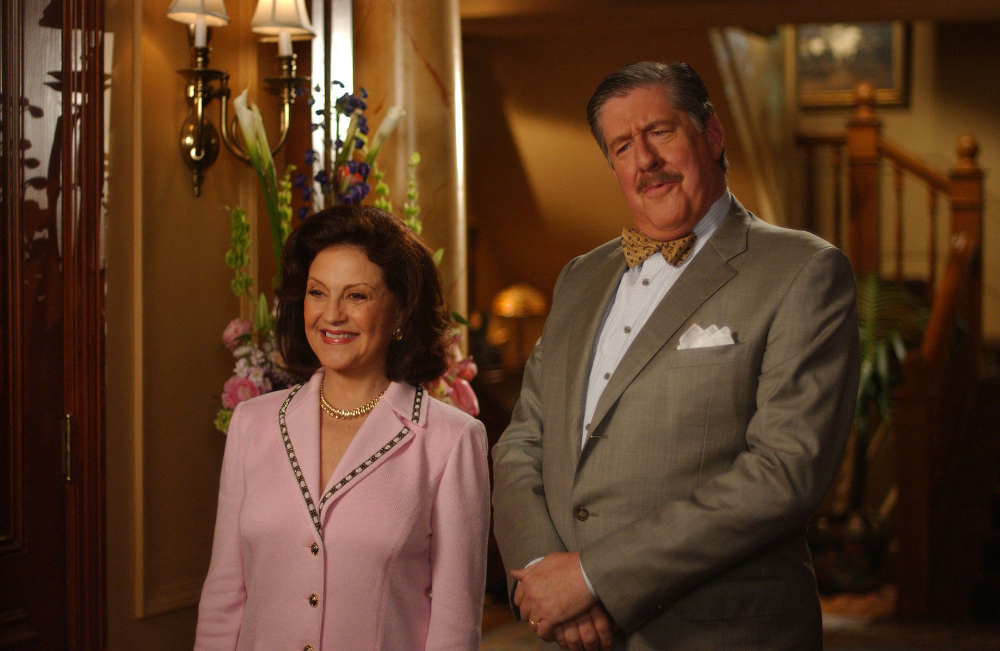
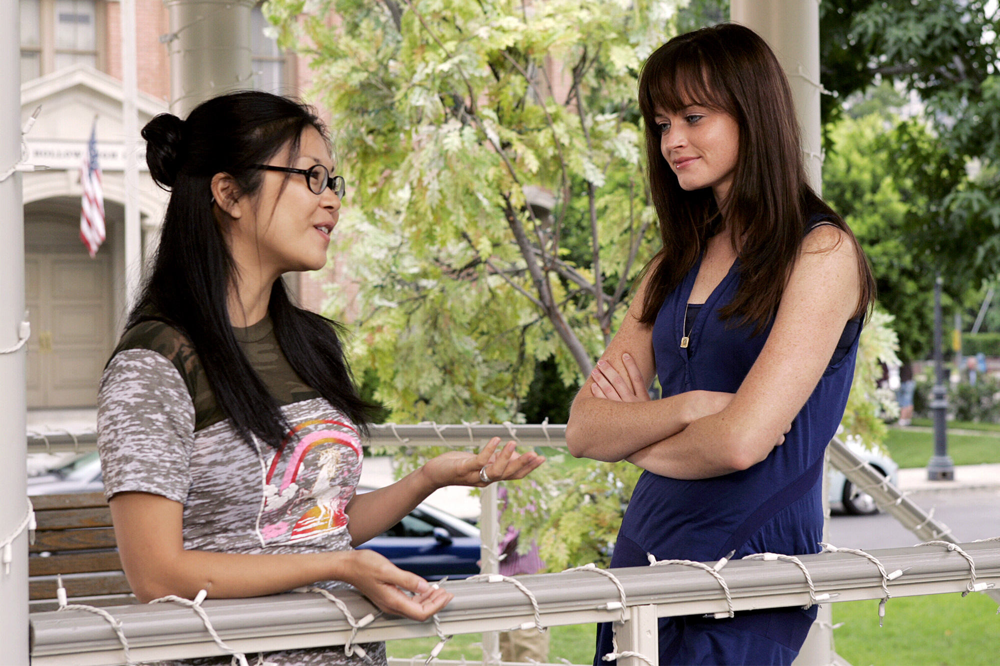

About

Gilmore Girls is an American TV series created by Amy Sherman-Palladino and her husband Daniel Palladino, starring Lauren Graham (Lorelai) and Alexis Bledel (Rory) as a mother and a daughter who are more friends than mother and daughter and who both dream of pursuing satisfaction in their love relationships and their careers. The show mixes the drama and comedy genres and presents a wide range of emotions, characters and situations. Although apparently the target audience seems the female genre, the series explores the male universe as well with the important characters of Luke (Scott Patterson), Jess (Milo Ventimiglia), Logan (Matt Czuchry), Christopher Hayden (David Sutcliffe), thus it has been appreciated also by male audiences.
Visual Style
The show used an overall homogeneous, real world, naturalistic visual style, although the later seasons have gotten darker and more theatrical - more rich also in set elements and decorations, especially in the Gilmore Mansion, to go with the larger scale format -, in season 6 and 7, the slightly different color palettes and the lighting mirrored the change of the series tones: Lorelai's house got redecorated and expanded, thus it showed a different kind of lighting, accompanied by brighter and more feminine tints. The overall look and feel though was definitely not so bright, as Lorelai and Rory's lives... This was stressed by emotional, dramatic scenes characterized by darker and gloomier lights and colors. Following creator Amy Sherman-Palladino's directives for the DVD release of the series, "Gilmore Girls" was published in the traditional 4:3 TV format - the 1.33: 1 aspect ratio - completely from season 1 to 7, also cutting on the use of the modern 5.1 surround audio format.
Content Style
We know that the Palladinos made a homage, with the quick dialogues everyone have, to the whole classic movie genre made of black and white pictures where actors engaged in super-speedy conversations (a direct homage is depicted in the episode Say Something, but also visual gags recalling screwball comedies back from the 30s or even before (for instance, we unexpectedly learn that Rory has a thing for the old movies of the Marx Brothers; she organizes a Marx marathon with her friend Marty in a season 5 episode).
We know that Lorelai likes the 80s movies (she shows some new millennium kids an old John Hughes movie with Molly Ringwald, "Pretty in Pink", in the episode Super Cool Party People and references many times the cult "Breakfast Club", by the same director) as much as those dreamy musicals from the 50s-60s (as in 'S Wonderful, 'S Marvelous where "Funny Face", starring Audrey Hepburn and Fred Astaire, is the movie Christopher screens privately for Lorelai on a farm's wall their first date together since High school).